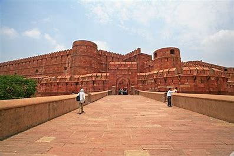
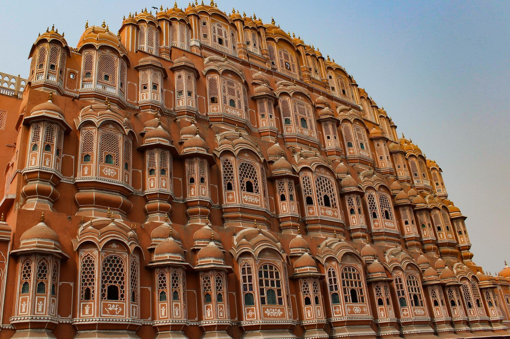
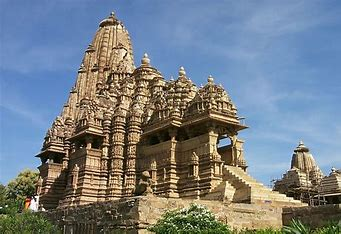
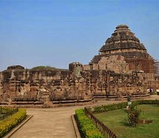
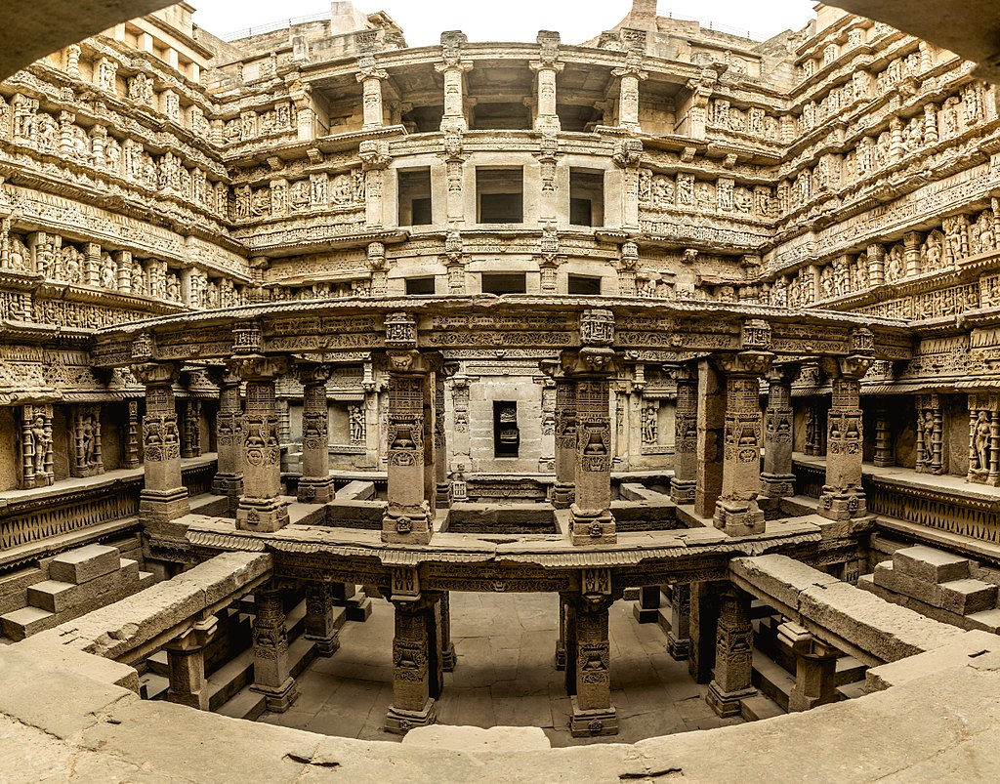
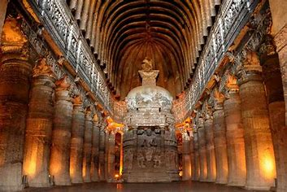
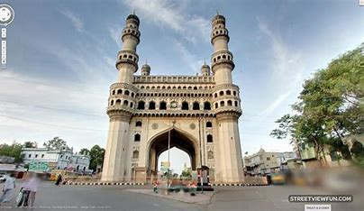
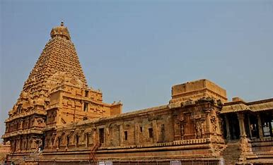

Agra Fort, Uttar Pradesh
Agra Fort, one of the famous historical places in India that is built entirely of red sandstone. Built in 1565 by Akbar, this historical tourist place in India has two ornately designed gates: the Amar Singh Gate and the Delhi Gate.
Hawa Mahal, Rajasthan
The 'Palace of Winds' or Hawa Mahal gets its name due to the fact that it looks like a honeycomb of a beehive with its 953 intricate windows. It is also shaped like a crown. this palace is known as the tallest building in the world that doesn't have any foundation.
Khajuraho Temples, Madhya Pradesh
Countless sculptures depicting love, eternal grace, beauty, delicacy and the creative arts can be seen in one of the most historical places in India. A perfect amalgamation of Hinduism and Jainism, Khajuraho temples have carvings of cult icons, demi gods and Apsaras.
Konark Temple, Odisha
Built by the great ruler of the Ganga dynasty - King Narasimhadeva I, along with 1200 artisans, the Konark Temple is magic set in stone. Located on the coast of the Bay of Bengal, this temple signifies the exquisite detailing of ancient architecture and is one of the famous historical places in India.
Rani Ki Vav, Gujarat
One of the most unexplored historical places in India, this stepwell was built in the 11th century AD, as a memoriam for King Bhimdev of the Solanki dynasty by his wife Queen Udayamati. The lowest level of the stepwell was earlier used as a route to escape to neighbouring villages. It is one of the most beautiful places to visit in Gujarat.
Ajanta & Ellora Caves, Aurangabad
The Ajanta-Ellora caves depict true craftsmanship skills where each rock carving was done by hand. These 29 caves are full of sculptures and paintings that epitomize Buddha and various Jataka tales. Blending three different religions: Buddhism, Jainism and Brahmanism, the 34 caves at Ellora have been carved on the walls of a basaltic hill.
Char Minar, Hyderabad
This historical tourist place in India was built to signify the end of plague in the city. Legend has it that there is a secret tunnel from the monument to Golconda fort but it hasn't been discovered till date. Each minaret of this monument has four stories and every arch has one clock.
Chola Temples, Tamil Nadu
Chola temples: Brihadeshwara Temple at Tanjore, Airavateshwara Temple in Darasuram, and Brihadeeshwara Temple in Gangaikonda Cholapuram. The three temples were built by the kings of Chola dynasty which was one of the greatest kingdoms of South India.